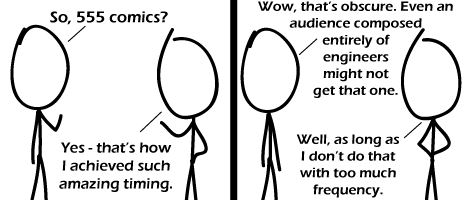

Comic JK 555
When I Feel Like It
⇤
<
?
>
⇥

⇤
<
?
>
⇥
Forum
.
RSS
.
Digg
.
Facebook
.
Reddit
.
Twitter
.
Stumbleupon
TLC555 is pants. Enter your thoughts on number 555 here. Please, no spamming, trolling, or TLC555s. What? Your mother's duty cycle on my dick outperforms a 555. >We want NE555s none of that TLC555 crap. >> I prefer the 666's - 20% more! >>>20% more EVIL! >>>>20% cooler >>>>> ______ /__ __ / / / /__ / || / / ______| /| / _/# # # | __ _/ /_/ ## ## # / / // # ## #### / | // ## ## / |// / | |/ ‿ / | _____ / |) | /_/ | | | | | | You must All bow down to me. I am the god of the 555! If you don't believe me, I do have references who will attest to as much. Side note, What sort of duty cycle are you getting? Hey, I'm reading this at 5:55! I don't get the joke, but I thought that was oddly coincidental. >CAS Latency, I'm guessing. 5-5-5-x memory is very low latency, and thus has the amazing timing referenced in the comic. >>No, Google 555 Timer >>>It's one of the more useful ICs in my opinion. >>>>No, it's on a horrible IC. You clearly have never seen what it can do to your power rails! >>>>> True dat! [^_^] >>>>> That's what decoupling capacitors are for. Yay for being an eng undergrad Took me a few seconds but I got it. (And I'm a Mechanical engineer!) > I saw it with the first line. It helped that I made a 555 joke myself earlier today. (And I'm a Chemical Engineer!) I'll have to wait another 3472 comics for an entirely epic win though. Anyone else getting tired of all the meta-jokes about "gee, that's dumb, how bad will a joke have to be to use THAT topic?" >Nope. >> I don't think that's dumb. I've seen better execution though. >>> He can make these jokes with whatever frequency he wants. He simply might notice different resistance to the genre and a different capacity to handle it from some of the readers based on that frequency. >>>> I see a lot of potential with that strategy. Do they even teach engineering students about 555s anymore? They were common long before most of you were even born. >not as far as I know of, I'm learning engineering right now and never heard of it, although other IC's I have, heaps funny comic though > "bread and butter." Much more convenient than crystal oscillators for simple timing. > they may have been common ages ago, but they're still common now too - some things are too damn useful to fade into obscurity 555 who's a which now? What course should I take to get this comic? Took a while to laPlace this one... Hehe, nice one :D DIY electronics ftw >this, I get it because of DIYing, not any courses that I've taken at any school. >>Same here. I've never taken an electronics course in my life, but only because they don't offer any at my high school. I GET IT. Solely because of a mediocre java-based circuit sim whose site I read about once somewhere years ago. I think I win for "most obscure reason I get the joke" >no, you fail. >>no, YOU fail. >>>No, your mom fails. >>>>No, YOUR mom fails. >>>>>Your momma fails so much, she should be called Mrs. Cha. >>>>>>Who is "Mrs. Cha" anyway? I ACTUALLY GET IT >YEAH ME TOO! IT IS AMAZING! Obscure? I'm *SO* not an engineer or electronics person and I didn't even need to think about this one to get it. I love this one! I find it upsetting that I know /just/ enough about electronics to understand this, but trying to make a circuit involves lots of swearing and acts of random violence.